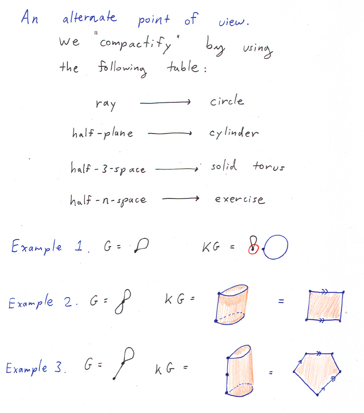
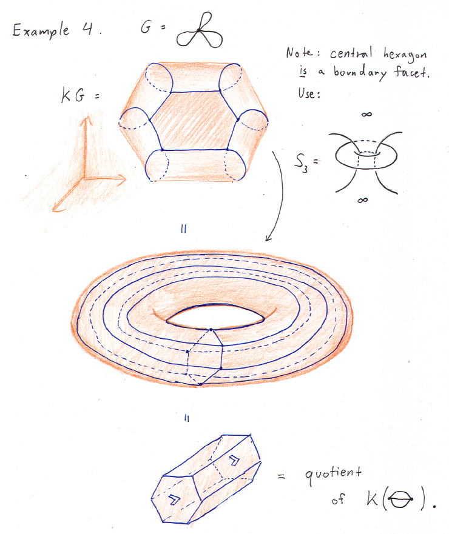
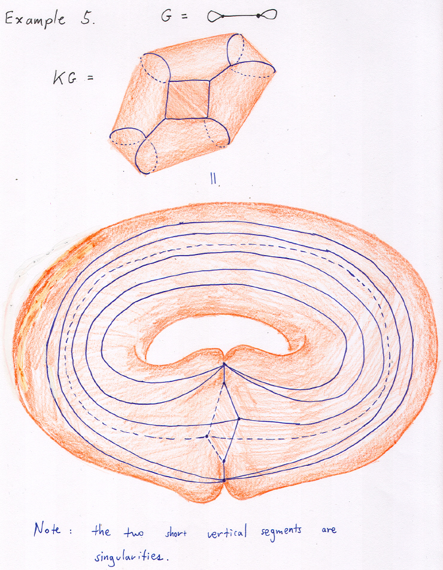

Multigraph associahedra Part 2: more loops
The key sources include: M. Carr and S. Devadoss's papers on graph associahedra, and S. Devadoss and S.Forcey's paper on multiplihedra.



Revision Date: